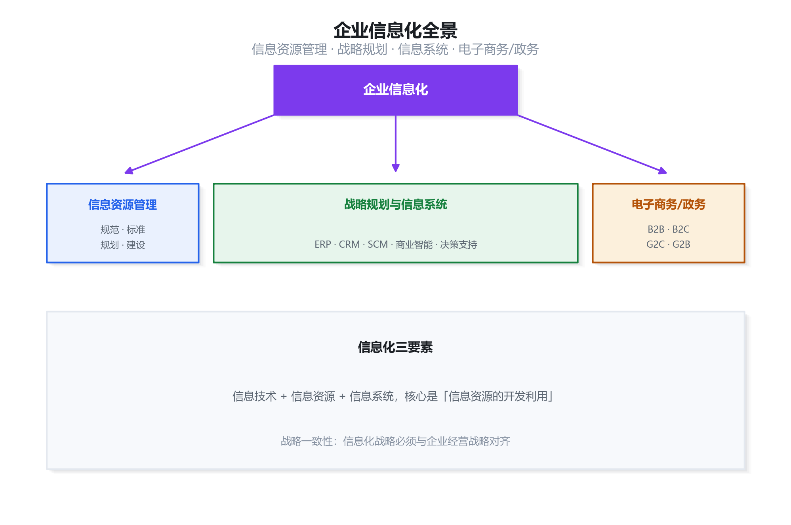
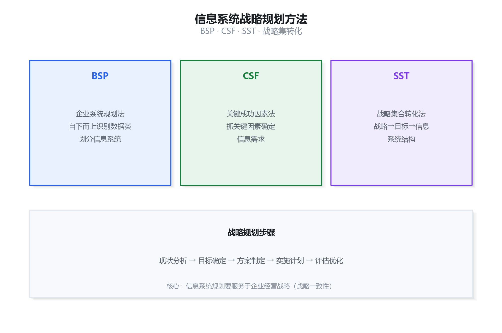
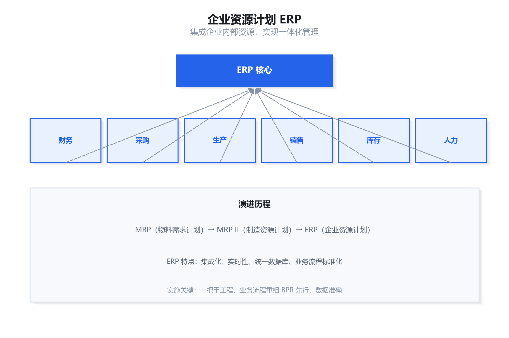
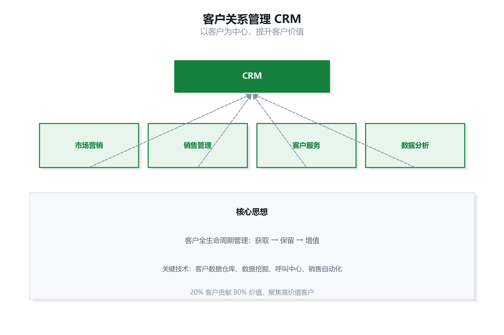
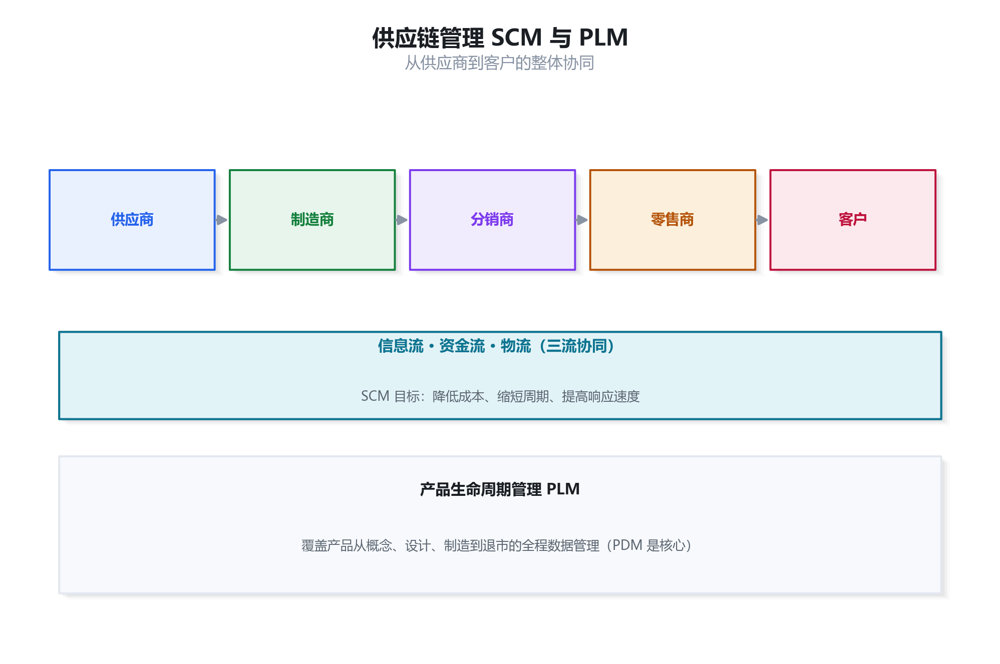
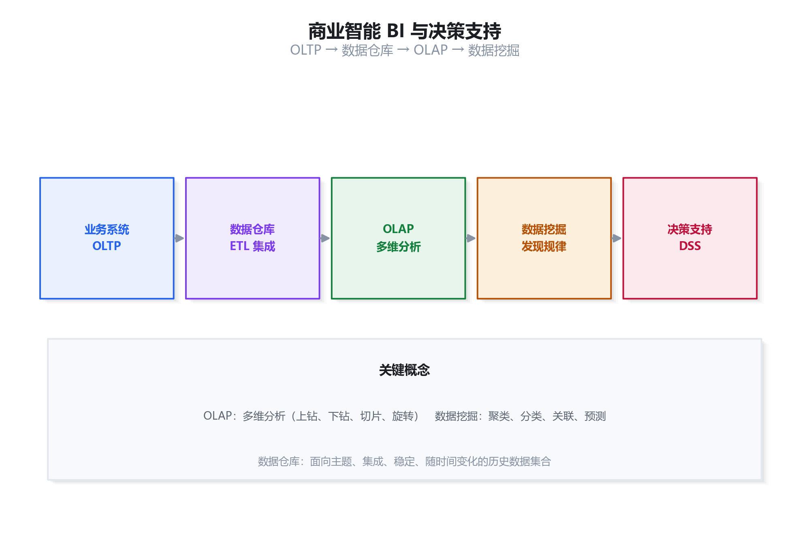
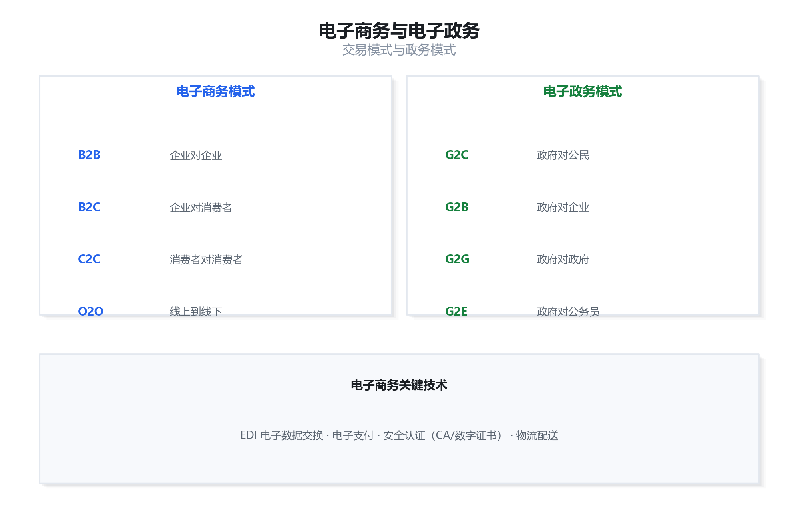
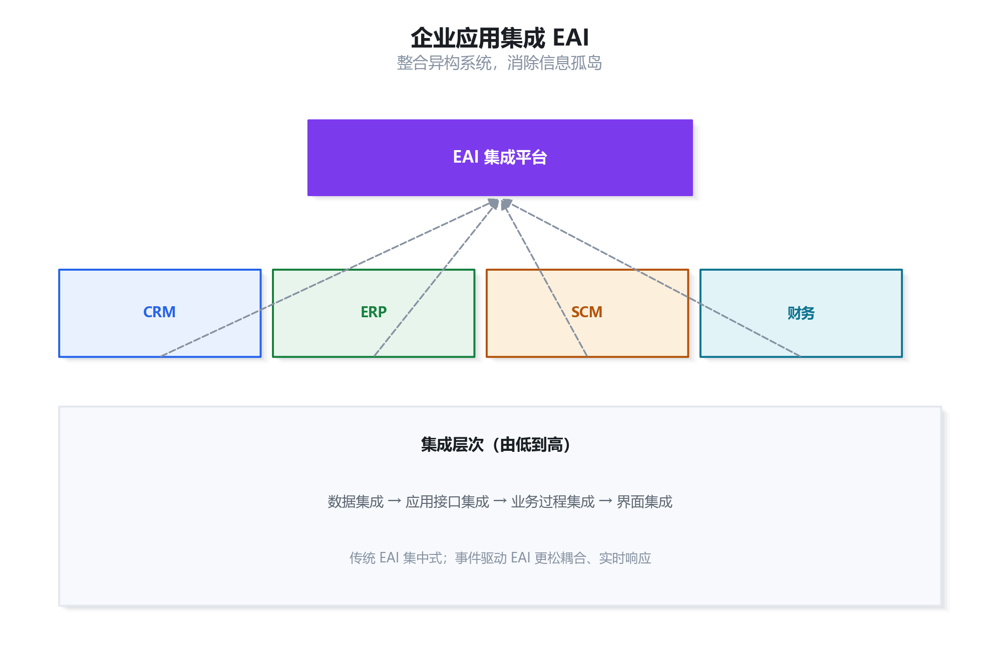

企业信息化与系统规划：考点精讲 + 真题详解
本章对应官方教程第 6 章，是系统分析师区别于其他资格考试的特色考点，上午约占 5—8 分。信息系统战略规划方法（BSP/CSF/SST）、ERP、CRM、SCM、商业智能与决策支持、电子商务与电子政务、业务流程重组 BPR、企业应用集成 EAI 是高频考点。本资料逐条讲透概念、给出真实原理插图（可放大细看）、并按「先讲道理、再列对照、最后逐步推导」的方式拆解真题。
企业信息化概述
基础1.1 企业信息化的内涵
企业信息化是指企业利用信息技术，开发和利用信息资源，改造和提升传统产业的过程。其核心是信息资源的开发利用，目的是提高企业竞争力与经济效益。
信息化的三大要素：信息技术、信息资源、信息系统。三者中，信息资源的开发利用是核心——技术是手段，资源是根本，系统是载体。
1.2 信息资源管理
- 信息资源规划：对企业信息进行全面规划，建立统一的数据标准与信息架构。
- 规范与标准：统一信息编码、数据字典，消除「信息孤岛」的前提。
- 信息资源网建设：构建企业内部的信息共享与交换网络。
1.3 战略一致性

信息系统战略规划方法
高频2.1 三种经典规划方法
| 方法 | 全称 | 核心思想 |
|---|---|---|
| BSP | 企业系统规划法 | 自下而上识别数据类与过程，规划企业整体信息系统结构 |
| CSF | 关键成功因素法 | 抓住影响企业成功的关键因素，据此确定信息需求 |
| SST | 战略集合转化法 | 把组织战略集合转化为信息系统的战略集合 |

企业资源计划 ERP
高频3.1 ERP 的演进
ERP（Enterprise Resource Planning，企业资源计划）是整合企业内部人、财、物、产、供、销等资源的集成化管理信息系统，其演进脉络为：
3.2 ERP 的核心思想
- 集成化：统一数据库，各业务模块共享数据，消除信息孤岛。
- 流程标准化：把企业最佳实践固化为标准流程。
- 实时性：业务发生时数据实时更新，支持及时决策。
- 面向供应链：把企业内部资源与外部供应链协同起来。

客户关系管理 CRM
高频4.1 CRM 的核心思想
CRM（Customer Relationship Management，客户关系管理）以客户为中心，贯穿客户获取、保留、增值的全生命周期，提升客户满意度和忠诚度。
4.2 CRM 的组成
| 模块 | 作用 |
|---|---|
| 市场营销自动化 | 客户细分、营销活动管理 |
| 销售自动化 | 商机管理、销售流程跟踪 |
| 客户服务 | 呼叫中心、投诉处理、服务工单 |
| 数据分析 | 客户画像、价值分析、流失预警 |

供应链管理 SCM 与 PLM
高频5.1 供应链管理 SCM
SCM（Supply Chain Management，供应链管理）把供应商、制造商、分销商、零售商、客户串成整体，协同管理信息流、资金流、物流三流，目标是降低成本、缩短周期、提高响应速度。
5.2 产品生命周期管理 PLM
PLM（Product Lifecycle Management）覆盖产品从概念、设计、制造、销售到退市的全生命周期数据管理，核心是 PDM（产品数据管理），管理产品相关的设计文档、BOM、变更等。

商业智能与决策支持
高频6.1 数据仓库
数据仓库是面向主题、集成、相对稳定、反映历史变化的数据集合，用于支持管理决策。它是 BI 的基础，通过 ETL（抽取、转换、加载）从业务系统汇总数据。
6.2 OLAP 与数据挖掘
| 技术 | 含义 | 典型操作/方法 |
|---|---|---|
| OLAP | 联机分析处理，多维分析 | 上钻、下钻、切片、旋转 |
| 数据挖掘 | 从海量数据发现隐含规律 | 聚类、分类、关联规则、预测 |
6.3 决策支持系统 DSS
DSS（Decision Support System）辅助管理者进行半结构化/非结构化决策，典型结构为「数据库 + 模型库 + 方法库 + 人机交互」。与 MIS 相比，DSS 更强调模型分析与「what-if」推演。

电子商务
高频7.1 电子商务模式
| 模式 | 含义 | 示例 |
|---|---|---|
| B2B | 企业对企业 | 企业间采购平台 |
| B2C | 企业对消费者 | 网上商城 |
| C2C | 消费者对消费者 | 二手交易平台 |
| O2O | 线上到线下 | 团购、本地生活服务 |
7.2 电子商务关键技术
- EDI（电子数据交换）：企业间业务单据的标准化电子传输。
- 电子支付：网上银行、第三方支付、移动支付。
- 安全认证：CA 数字证书、数字签名，保障交易安全。
- 物流配送：电子商务的线下支撑。

电子政务与 BPR
常考8.1 电子政务模式
| 模式 | 含义 |
|---|---|
| G2C | 政府对公民 |
| G2B | 政府对企业 |
| G2G | 政府对政府 |
| G2E | 政府对公务员 |
8.2 业务流程重组 BPR
BPR（Business Process Reengineering，业务流程重组）是对企业业务流程进行根本性再思考和彻底性再设计，以获得成本、质量、服务、速度等方面的戏剧性改善。它以流程为中心，而非以职能为中心。
企业应用集成 EAI
高频9.1 EAI 的目的
EAI（Enterprise Application Integration）把企业内异构、分散的应用系统（ERP、CRM、SCM、财务等）整合起来，消除「信息孤岛」，实现数据与业务协同。
9.2 集成层次
| 层次 | 集成内容 |
|---|---|
| 数据集成 | 不同系统间数据的共享与同步 |
| 应用接口集成 | 通过 API/接口调用实现应用互操作 |
| 业务过程集成 | 跨系统的业务流程编排与协同 |
| 界面集成 | 统一门户，集成各系统界面 |

复习建议
应试10.1 高频考点清单
| 考点 | 关键结论 |
|---|---|
| 战略规划方法 | BSP（过程-数据类）、CSF（关键成功因素）、SST（战略集转化） |
| ERP 演进 | MRP → MRPⅡ → ERP；集成化、统一数据库 |
| CRM | 以客户为中心，获取/保留/增值 |
| SCM | 信息流、资金流、物流三流协同 |
| 数据仓库 | 面向主题、集成、稳定、反映历史变化 |
| OLAP vs 数据挖掘 | 多维分析 vs 发现隐含规律 |
| 电子商务模式 | B2B、B2C、C2C、O2O |
| 电子政务模式 | G2C、G2B、G2G、G2E |
| BPR | 根本性再思考、彻底性再设计 |
| EAI 层次 | 数据→应用接口→业务过程→界面 |
10.2 五道真题演练
A. 抓住影响企业成功的关键因素确定信息需求 B. 自下而上识别过程和数据类，规划整体结构 C. 把组织战略转化为信息系统战略 D. 从客户需求出发设计系统
查看解析
答案：B
BSP（企业系统规划法）的核心是自下而上识别企业过程和数据类，据此规划企业整体的信息系统结构，故选 B。
A 是 CSF（关键成功因素法），C 是 SST（战略集合转化法），D 与规划方法无关。
A. ERP 的前身是 CRM B. ERP 只管理物料需求 C. ERP 通过统一数据库集成企业资源 D. ERP 属于决策支持系统
查看解析
答案：C
ERP 的核心特征之一是统一数据库、集成化，把企业人财物、产供销集成管理，故 C 正确。
A 错误：ERP 前身是 MRP/MRPⅡ，不是 CRM；B 错误：只管理物料是 MRP，ERP 覆盖全面；D 错误：ERP 是事务处理/管理信息系统，不是决策支持系统。
A. B2B B. B2C C. C2C D. G2B
查看解析
答案：B
B2C 指「企业（Business）对消费者（Consumer）」，网上商城向个人消费者销售商品正是 B2C，故选 B。
B2B 是企业对企业，C2C 是消费者对消费者，G2B 是政府对企业，均不符。
A. 面向事务、频繁更新 B. 面向主题、集成、相对稳定、反映历史变化 C. 只存储实时数据 D. 与业务数据库完全相同
查看解析
答案：B
数据仓库的四大特征是面向主题、集成、相对稳定、反映历史变化，用于支持决策，故选 B。
A 描述的是业务数据库（OLTP）的特征；C、D 均错误。
A. 在现有流程基础上渐进改进 B. 以职能分工为中心优化组织 C. 对业务流程进行根本性再思考和彻底性再设计 D. 只关注技术升级
查看解析
答案：C
BPR 的定义是「对业务流程进行根本性再思考和彻底性再设计，以获得戏剧性改善」，以流程为中心，故选 C。
A 是 BPI（渐进改进）；B 错误，BPR 以流程而非职能为中心；D 错误，BPR 是管理变革，不只是技术升级。